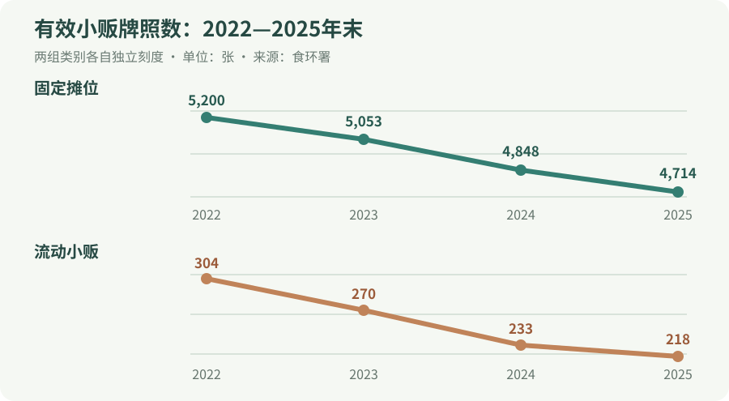

核心结论：制度稀缺是真的，“港澳不用考公”并没有被证明
香港某些行业存在数量限制、资格审查、历史形成的资产化牌照与可交易经营权。稀缺许可可能使取得资格的人免于一部分新进入竞争；但“准入受限”≠“永不发新牌”≠“持牌就高利润”≠“青年不再考公”。这条推理链的每一个等号都需要独立证据。
固定摊位牌照与流动牌照分别计数，不包含临时牌照及副牌。[1]
食环署公告开放空置摊位申请并计划发新牌，公众符合条件可参加指定类别。[2]
学士程度综合能力考试准考人数；实际到考7,573人，不是录用人数。[11]
一、先分开五种完全不同的“牌照”
把小贩牌照、出租车车辆牌照、司机驾驶资格、专线客运经营许可和医师注册资格统称为“可以世袭的铁帽子王”，会产生制度混淆。它们赋予的权利、持有主体、续期标准、买卖能力以及合规义务完全不同。
| 制度对象 | 真正受限制的是什么 | 不能推出什么 |
|---|---|---|
| 街头小贩 | 特定牌照类型、摊位地点和经营条件 | 只有218人可以合法经营所有形式的街头零售 |
| 的士 | 载客车辆牌照及车辆供应量；司机另持驾驶资格 | 买车辆牌照即豁免驾驶要求、车检或投诉监管 |
| 公共小巴 | 车辆总数上限；绿巴线路另有客运牌照安排 | 红巴可以继承任何专线的独占经营权 |
| 医生 | 专业注册、考试、培训与特定路径资格 | 只有两所大学毕业生才有执业机会 |
| 澳门公务人员 | 一般能力评价与部门专业/职务能力考试 | 香港市场制度可直接解释澳门青年职业选择 |
二、小贩：218 与 4,714 两个数字是真实的，但“世袭罔替”被官方规则直接反驳
食物环境卫生署的年度统计列明，2022—2025年流动小贩牌照数量分别为304、270、233、218，固定摊位牌照分别为5,200、5,053、4,848、4,714。两个类别的牌照确有下降。这只说明在指定统计时点有效牌照存量减少，无法单凭余额逆推出年内发牌数量、退出原因、市场利润变化，更不能推论“每张牌照的生意自动变好”。[1]

真正决定制度性质的是“谁还能新加入”。香港食环署2026年9月23日新闻稿明确指出：2019年和2022年已有两轮空置摊位重新编配，合共发出523张小贩牌照；2026年又宣布提供321个空置固定摊位供符合条件人士申请，包括一个面向符合基本要求的公众类别。[2] 因此，“1972年以后完全不再发牌”“只有亲属才能得到”均不成立。321是拟重新编配摊位数，不能误说成2026年末已实际发出的321张牌照。
同一官方常见问答指出：流动小贩牌照一直不设继承或转让安排；2010年5月21日及以后新签发的小贩牌照一般不允许继承或转让；此前旧牌照在特定条件下一般仅容许一次性继承或转让，且需要审批，不能无限代际“世袭罔替”。[3]
这不是说香港街头经营没有门槛。地点、申请类别、经营年限、食物卫生和牌照用途均可能形成现实限制。更准确的问题是：当配额长期偏紧时，准入条件会怎样影响新经营者机会、租金分配与消费者福利？
三、的士与小巴：配额能形成资产价值，但经营者仍受多重约束
香港运输署2026年公开资料记载全港18,163辆的士，包括市区15,250辆、新界2,838辆及大屿山75辆。这里是营运车辆数量，不是司机人数，也不能自动等同“现存可任意买卖的金融资产数量”。[4]
的士车辆牌照与司机的商业驾驶执照必须区分。根据运输署规定，申请相应商业驾驶资格需要满足身份、考试和岗前课程等要求；70岁及以上司机申请或续领执照须提交体格检查证明。这足以反驳“买了牌照，无论年龄、状态如何就不会失去资格”的笼统断言。是否绕路、拒载及其他服务行为，还涉及专门的执法和投诉机制。[5]
公共小巴方面，运输署历史资料支持自1976年起总数上限为4,350辆，但这一数字是整体公共小巴供应限制，不是“红顶小巴专属牌照上限”。绿色小巴的指定线路经营制度与红色小巴的非专线服务不同，不能把车辆持有与任何线路的永久独占权混为一谈。[6]
高峰期有人为的士牌照支付高价，并不保证后来净收益。资本化价值取决于未来预期净收入、借款利率、监管变化及替代出行服务；牌照作为资产还会有价格波动、负债、折旧与融资风险。原文所称“曾达600万港元”在本轮可核对的官方材料中未完成成交价格与时间点验证，故不作为本文已核实数字。
四、医生：专业准入限制存在，但“港大中大之外不能执业”过于绝对
医疗专业注册的目的不只关乎竞争，也涉及技能标准、患者安全和公共卫生。香港医务委员会公布的注册途径包括本地培训者路径、执业资格试、有限度注册及特别注册等，部分非本地培训医生在满足要求下可以取得香港执业资格。[7][8]
故“只有港大与中大医学院毕业生才可能有本地行医资格”“所有外来医生基本不被允许从业”不是准确的现行规则概括。另一方面，存在考试和资格认定路径也不等于外地医生进入毫无障碍，专业资格、可选岗位、培训安排与实际申请成本仍需单独衡量。
“读医一定比公务员赚得更多”“高分生基本都去学医”“本地医学名额自然解释全部职业偏好”等说法，需要教育统计、就业收入分布与学生志愿数据。这些材料不是单凭专业准入法规可以得出的。
五、家禽：有许可约束，但“2007年永久禁止内地活禽进口”不实
香港立法会官方答复回顾了禽流感防控、2005—2008年自愿交还或收购畜禽养殖牌照安排，以及停止新发特定养禽牌照的政策。限制有公共卫生目的，也会影响竞争结构；这两个事实可以同时存在。[9]
2023年官方答复又明确说明：香港并未禁止从内地进口活鸡及部分其他活家禽；只是自2017年初以来没有来自内地的供应，政府解释主要与商业考虑有关。因此，“2007年已从法律上永久禁止进口，只有29家本地养殖户垄断全部供应”的因果链不能成立。[9]
至于原帖关于“29张家禽养殖牌照”“43家猪场”“最高许可饲养74,640头”的具体数字，本研究没有取得同一年、同口径的一手现存牌照表并逐项复算，暂列待核验。即使相关数字属实，也须结合冷鲜肉、冻品、进口食物与其他替代渠道分析市场，不可把“活家禽”推成“整个肉类市场”。
六、公务员：比较“报录比”之前，先把分子与分母对齐
原文把“香港2025年公开招聘10,627人”“收到约30万份申请”“内地2026年度国考过审371.8万人”相除再横比，问题在于不同统计变量被当成了同一种量。
| 数字或制度 | 可核实的准确含义 | 比较警告 |
|---|---|---|
| 10,627 | 香港2024—2025年度公务员聘任总数，且包括内部聘任及退休重聘。[10] | 不是2025年对外公布的新职位数 |
| 6,606 | 香港2025—2026年度公务员聘任总数，同一表更新值。[10] | 不能与不确定的“30万份申请”直接推算个人录取率 |
| 约30万申请 | 公务员招聘申请量的官方近年概数线索，但同一人可申请多职位，尚未取得与所用聘任年度完全对齐的统一口径。 | 申请件数≠唯一申请人数 |
| 2026—27六职系 | 香港行政主任、政务主任等六个学位职系采用联合招聘，需满足相应学历、语文、能力测试和法例测试条件。[12] | 部分学位职系不限大学专业，并不等于所有公务员无专业或年龄条件 |
| 内地国考 | 2026与2027年度招录人数及资格审查人数须使用同一年度官方公告的字段。 | 不能把2026年的过审人数除以2027年计划名额 |
香港公务员也有入职考试、资格及岗位竞争；某些职系不限制本科专业只是开放报考资格，并不意味着录取容易。同样，内地国考的单职位报名方式、学历专业筛选和香港多岗位申请制度，会系统性改变申请件数的含义。
可比较的最小研究设计：选同一年、同年龄与学历群体，分别统计“至少投递一次公务员职位的唯一人数÷符合资格并求职的人数”，再控制重复申请、政府职位覆盖、参加考试到录用的转换率。现有数字不足以计算这个指标，所以本文不声称香港竞争强度一定只有内地三分之一。
七、澳门不是香港：已有万人考试参与的直接反例
澳门在2016年改革公务人员招聘、其后进一步调整为现行统一管理考试制度。一般综合能力评估及部门专业或职务能力评估属于不同阶段，合格成绩可用于有效期内后续报考；具体职位仍要满足条件。[13]
2025年5月11日学士程度综合能力考试共有10,355名准考人、7,573名实际到考者，合格成绩有效期为五年。这是参加某次资格评价考试的人数，不代表有10,355个公职空缺，更不能直接计算录取概率，但足以说明澳门公职对一定数量求职者具有吸引力。[11]
为什么澳门青年就业偏好可能与内地、香港不同？需要进一步研究博彩及旅游产业的薪资与周期性、公共部门岗位供给、澳门人口规模、永久性居民资格限制、教育结构、跨境工作机会，而不是把香港的士牌照直接移植成澳门解释。
八、经济租真正成立需要四个条件，而不是一张牌照
- 1 · 有效限制新增进入者确实难以进入，且执法有效
- 2 · 需求存在购买者持续愿意为对应服务付费
- 3 · 替代不充分其他地点、交通方式、医生或食品不能完全替代
- 4 · 成本可控租金、工资、车辆、检验和资本成本没有吞噬溢价
经济租不是营业额，更不是把牌照持有视作自动获得稳定工资。观察净收益与风险，才有可能判断某种职业是否真正比公务员更有吸引力。
交互推演：同一个稀缺摊位，盈利一定稳定吗？
以下所有数值均为可修改的假设参数，单位是港元；不是对香港任何摊位的实际收入估计。单笔贡献为销售额减商品相关变动成本后的金额。
盈亏平衡约需1,275笔交易/月。
计算：净收益＝交易笔数 × 每笔贡献 − 固定经营成本 − 牌照及合规成本。此教学模型未计税、折旧、机会成本与收入季节性；与公务员工资不具直接可比性。
这就是反证的核心：数量受限可以提高某个入口的潜在稀缺价值，但高资本成本、经济衰退、需求转移、连锁便利店竞争或政策调整仍可降低持牌人的利润。稀缺许可和稳定职业不是同义词。
九、对原叙事逐项审计：哪些是事实，哪些需要改写？
支持2025年底有218张流动小贩及4,714张固定牌照
食环署有原始年度统计表。但“218”只对应流动牌照，不代表所有合法街边经营形式。[1]
反驳1972年以后再未发牌、所有小贩牌照均可无限世袭
2019与2022两轮已有523张新牌照，2026年公布321个空位新牌申请；流动小贩牌照不准继承或转让，2010年后新发牌照原则上亦不准。[2][3]
反驳的士买牌后不受年龄或车况要求约束
商用驾驶资格和车辆牌照分开；70岁以上续牌需体检，载客服务另受监管。[5]
反驳2007年起永久禁止所有内地活家禽进口
2023年香港官方明确表示对内地活鸡及部分活家禽不存在全面进口禁令，2017年初后没有供货不等于法律禁止。[9]
存疑麻将馆144牌、世袭与仅余60多家；所有牌照都暴利
本轮未取得对应年度的一手牌照发放与经营净收益数据；不能把轶事或民间价格说法升级为行业事实。
存疑港澳青年不如内地热衷考公，是因为行业垄断更赚钱
尚缺同年龄同学历唯一求职人数、职业偏好、工资净额、家庭资产以及职业流动的可比较数据；澳门万人公职考试参与也构成直接反例。[11]
十、结论：要研究“为什么考公”，必须先研究年轻人真正有哪些选择
这篇流行叙事最有价值的洞察，是提醒我们：公务员不是唯一的制度性安全资产。某些行业的许可、资格、网络和资产可以带来进入壁垒，并可能形成既得收益。但将香港全部经济活动描写成不会竞争的世袭行业、将澳门也一并概括，既不符现行法规，也无法解释企业倒闭、劳动力流动、经营成本和风险偏好。
更有解释力的研究框架，应把青年选择拆成：可预期税后收入、失业及收入波动风险、前期培训与资本门槛、晋升与流动空间、职位供给、个人家庭资源，以及政策带来的资格约束。公务员、专业职业、自营生意、私营雇员的吸引力，是这些变量的组合，不是一句“哪个能世袭”可以决定的。
可稳健成立的结论：香港一些行业存在配额和专业准入；部分牌照存量下降；香港公务员招录和澳门公职考试有不同制度设计。不能成立的结论：香港小贩普遍世袭不发新牌；持牌人一律旱涝保收；澳门青年不热衷考公；较低的表面申请件数比例已经证明牌照垄断决定职业意愿。
参考来源与可复核边界
- 香港食物环境卫生署，Pleasant Environment Statistics 2022–2025，小贩牌照年末存量表（2022—2025）。
- 香港食物环境卫生署，Application for vacant fixed hawker pitches to open from October 6，2026-09-23；包括2019/2022新牌523张与2026年321个空置摊位安排。
- 香港食物环境卫生署，321个空置固定小贩摊位分配常见问答，问题20—21：继承与转让规定（2026年页面）。
- 香港运输署，Taxis，的士数量与地区构成（检索于2026-11-27）。
- 香港运输署，Requirements for Obtaining a Driving Licence，商用驾驶资格和70岁以上体检。
- 香港运输署，Public Light Bus: A Brief History，历史说明：1976年起公共小巴总量4,350；另参见Minibuses。
- 香港医务委员会，Full Registration，正式注册资格及资格试途径。
- 香港医务委员会，Limited Registration and Special Registration，非本地培训医生其他路径。
- 香港特区政府新闻公报，LCQ1: Supply of live poultry，2023-11-29；说明没有全面进口禁令、2017年后实际未有供货与既有防疫安排。
- 香港公务员事务局，Appointments to the Civil Service，2024—2025及2025—2026年度聘任统计和口径说明。
- 澳门行政公职局经政府入口发布，学士学位综合能力评估开考考试顺利举行，2025-05-11。
- 香港公务员事务局，2026–27 Six Graduate Grades Recruitment Exercises，各职位资格、考试及聘任制度。
- 澳门行政公职局，综合能力评估开考，统一管理制度及成绩有效期。
核验时点：2026-11-27。资料以政府官方网页与原始公告为主；个别页面后续可能修订。引用所能证实的是政策文字与公告口径，不自动证明行业利润、跨地区青年心理或政策净效应。原始网络评论作为问题线索，未逐字转载；具体逐项状态见仓库 evidence.json。